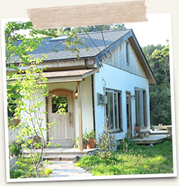

KUJIRA cafeについて
KUJIRA cafeは、4月18日に九寺楽町にオープンしたカフェです。立ち寄ってくださったお客様がゆったりとした時間を過ごせるような店作りを心がけています。おかげさまで開店以来多くのお客様をお迎えすることができました。地元の方が足繁く通ってくださることは、私たちにとって大きな励みになっています。また、中には遠方からはるばるいらっしゃるお客様も多く、皆様にはたいへん感謝しております。
お食事は、気軽に楽しめる小ぶりのキッシュとタルトが自慢です。地元で採れた材料を中心に、できるだけ素材の味をそのまま引き出す方法で調理しています。地元産のイワシを使った自家製サーディンのキッシュ。アプリコットやリンゴをはじめ、旬の果物を使ったタルト。季節の味を楽しめるように、いつもメニューを見直し、入れ替えています。メニューの入れ替えはNewsでお知らせします。
店主は10年間イタリアのカフェ・バールで給仕したバリスタ。エスプレッソコーヒーを中心に、地元産の果物を使ったジュースからハーブティーまで、さまざまなバリエーションの飲み物をご用意しております。
皆様のお越しを心よりお待ちしております。
店舗情報
| 住所 | 〒199-9999 或留県九寺楽市九寺楽町3-30-8（地図） |
|---|---|
| 電話番号 | 09-9280-2611 |
| 営業時間 | 10:00～22:00 |
| 定休日 | 水曜日・日曜日 |
| ご予約 | 席のご予約を承っております。 貸し切りパーティは15名様から承っております。詳しくはお電話、もしくはお問い合わせをご利用ください。 |